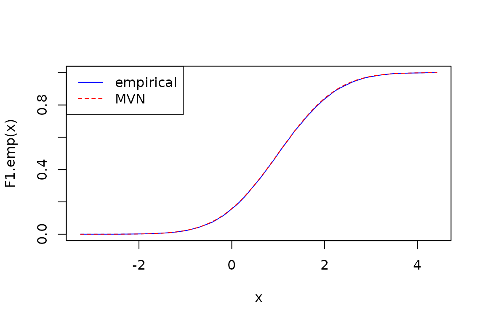

Introduction
To demonstrate the R package algebraic.dist, we consider
the multivariate normal distribution (MVN) and its empirical
approximation.
We start by loading the package:
Defining the data generating process
We define the parameters of the data generating process (DGP) with:
# we define the parameters of the MVN
M <- mvn(mu = 1:5, sigma = diag(1:5))
print(M)
#> Multivariate normal distribution (5 dimensions)
#> mu:
#> [1] 1 2 3 4 5
#> sigma:
#> [,1] [,2] [,3] [,4] [,5]
#> [1,] 1 0 0 0 0
#> [2,] 0 2 0 0 0
#> [3,] 0 0 3 0 0
#> [4,] 0 0 0 4 0
#> [5,] 0 0 0 0 5When we print out the parameters, we get a large vector that includes both the elements of the mean vector () and the elements of the variance-covariance matrix ().
params(M)
#> mu1 mu2 mu3 mu4 mu5 sigma1 sigma2 sigma3 sigma4 sigma5
#> 1 2 3 4 5 1 0 0 0 0
#> sigma6 sigma7 sigma8 sigma9 sigma10 sigma11 sigma12 sigma13 sigma14 sigma15
#> 0 2 0 0 0 0 0 3 0 0
#> sigma16 sigma17 sigma18 sigma19 sigma20 sigma21 sigma22 sigma23 sigma24 sigma25
#> 0 0 0 4 0 0 0 0 0 5Each observation is an i.i.d. vector from the MVN. We sample from the MVN with:
# we generate a sample of size n
n <- 10000
# we sample from the MVN
data <- sampler(M)(n)We have a sample of size from the DGP. We show some observations from this sample with:
head(data, n=6)
#> [,1] [,2] [,3] [,4] [,5]
#> [1,] -0.400 2.361 -1.22 3.989 6.39
#> [2,] 2.148 -0.576 2.57 3.512 4.37
#> [3,] 0.446 2.890 6.58 0.738 6.15
#> [4,] -0.863 1.262 2.91 5.086 2.96
#> [5,] 1.468 2.513 0.74 5.476 9.22
#> [6,] 0.903 0.677 2.97 2.346 1.62Now, we also construct a empirical distribution from the sample with:
emp <- empirical_dist(data)
print(emp)
#> Empirical distribution (10000 observations, 5 dimensions)Since this is the empirical distribution, it is parameter-free:
params(emp)
#> NULLLet’s show the supports of the empirical distribution and the MVN:
# generate a data frame with the dimension, supremum,
# and infimum of the MVN and empirical distribution
df <- data.frame(supremum.mvn = supremum(sup(M)),
supremum.emp = supremum(sup(emp)),
infimum.mvn = infimum(sup(M)),
infimum.emp = infimum(sup(emp)))
row.names(df) <- paste0("param",1:dim(sup(M)))
print(df)
#> supremum.mvn supremum.emp infimum.mvn infimum.emp
#> param1 Inf 4.58 -Inf -2.82
#> param2 Inf 7.08 -Inf -3.42
#> param3 Inf 9.21 -Inf -3.01
#> param4 Inf 11.80 -Inf -2.61
#> param5 Inf 13.49 -Inf -4.88Let’s compare the mean and covariance-variance matrices of both the MVN and the empirical distribution of the MVN. First, let’s look at the means.
As expected, pretty close. Now let’s look at the variance-covariance:
vcov(M); vcov(emp)
#> [,1] [,2] [,3] [,4] [,5]
#> [1,] 1 0 0 0 0
#> [2,] 0 2 0 0 0
#> [3,] 0 0 3 0 0
#> [4,] 0 0 0 4 0
#> [5,] 0 0 0 0 5
#> [,1] [,2] [,3] [,4] [,5]
#> [1,] 1.01490 0.006508 0.005468 0.00654 0.0384
#> [2,] 0.00651 1.984264 -0.000128 0.04647 -0.0432
#> [3,] 0.00547 -0.000128 2.956973 -0.01391 0.0135
#> [4,] 0.00654 0.046470 -0.013906 3.93482 -0.0848
#> [5,] 0.03844 -0.043164 0.013515 -0.08485 5.0086The true variances of the population defined by the MVN is the diagonal of the variance-covariance matrix:
Let’s compute the variances using the general expectation method:
mu.emp <- mean(emp)
expectation(emp, function(x) (x - mu.emp)^2)
#> [1] 1.01 1.98 2.96 3.93 5.01
expectation(M, function(x) (x - mean(M))^2, control = list(n = n))
#> [1] 1.01 1.96 3.01 3.94 5.07We see that these are pretty good estimates, as the expectation is actually a Monte Carlo approximation. We can see the CI’s with:
expectation(emp, function(x) (x - mu.emp)^2, control = list(compute_stats = TRUE))
#> $value
#> [1] 1.01 1.98 2.96 3.93 5.01
#>
#> $ci
#> [,1] [,2]
#> [1,] 0.987 1.04
#> [2,] 1.929 2.04
#> [3,] 2.875 3.04
#> [4,] 3.827 4.04
#> [5,] 4.871 5.15
#>
#> $n
#> [1] 10000
expectation(M, function(x) (x - mean(M))^2, control = list(n = n, compute_stats = TRUE))
#> $value
#> [1] 1.01 2.02 3.10 3.89 5.09
#>
#> $ci
#> [,1] [,2]
#> [1,] 0.983 1.04
#> [2,] 1.961 2.07
#> [3,] 3.017 3.19
#> [4,] 3.787 4.00
#> [5,] 4.942 5.23
#>
#> $n
#> [1] 10000Next, we use the rmap function on the MVN and the
empirical distribution to compute the distribution of
.
If we take the mean of this, we should get the variance as shown
above:
mu.emp <- mean(emp)
mean(rmap(emp, function(x) (x - mu.emp)^2))
#> [1] 1.01 1.98 2.96 3.93 5.01
mean(rmap(M, function(x) (x - mean(M))^2, n = n))
#> [1] 1.01 2.01 2.99 4.07 4.98These are both reasonable estimates of the variance.
The PDF of the empirical is not very useful – it gets for each observation:
x <- sampler(emp)(1)
y <- sampler(M)(1)
data.frame(
ob = c("empirical(x)", "MVN(y)"),
pdf.emp = c(density(emp)(x), density(emp)(y)),
pdf.mvn = c(density(M)(x), density(M)(y)))
#> ob pdf.emp pdf.mvn
#> 1 empirical(x) 0.0001 0.00000258
#> 2 MVN(y) 0.0000 0.00038733Let’s plot the CDF of marginal distribution of :
X1.emp <- marginal(emp, 1)
F1.emp <- cdf(X1.emp)
curve(F1.emp(x), from = infimum(sup(X1.emp)), to = supremum(sup(X1.emp)), col = "blue", lty = 1)
X1 <- marginal(M, 1)
F1 <- cdf(X1)
curve(F1(x), from = infimum(sup(X1.emp)), to = supremum(sup(X1.emp)), add = TRUE, col = "red", lty = 2)
legend("topleft", legend = c("empirical", "MVN"), col = c("blue", "red"), lty = c(1, 2))
Given the sample size, the empirical distribution’s CDF is essentially the same as the MVN’s CDF (they’re right on top of each other). Let’s zoom in much closer so we can ee that the empirical CDF is a step function:
curve(F1.emp(x), from = 1, to = 1.0005, col = "blue", lty = 1, type = "s")
Let’s compute some expectations of :
cat("E(X1) = ", expectation(X1, function(x) x), "( expected ", mean(X1), ")\n",
"Var(X1) = ", expectation(X1,
function(x) {
(x - expectation(X1,
function(x) x)
)^2
}),
"( expected ", vcov(X1), ")\n",
"Skewness(X1) = ", expectation(X1,
function(x) {
(x - expectation(X1, function(x) x))^3 /
expectation(X1, function(x) x)^3
}),
"( expected 0 )\n",
"E(X^2) = ", expectation(X1, function(x) x^2),
"( expected ", vcov(X1) + mean(X1)^2, ")")
#> E(X1) = 1 ( expected 1 )
#> Var(X1) = 1 ( expected 1 )
#> Skewness(X1) = -0.000000000000341 ( expected 0 )
#> E(X^2) = 2 ( expected 2 )Let’s show a scatter plot of the joint distribution of and :
dataX2X4.emp <- sampler(marginal(emp, c(2, 4)))(10000)
dataX2X4.mvn <- sampler(marginal(M, c(2, 4)))(10000)
# scatter plot a 2d sample. use xlab and ylab to label the axes
plot(dataX2X4.emp[,1], dataX2X4.emp[,2], pch = 20, col = "blue", xlab = "X2", ylab = "X4")
# overlay in green the MVN data
points(dataX2X4.mvn[,1], dataX2X4.mvn[,2], pch = 20, col = "green")
legend("topright", legend = c("empirical", "MVN"), col = c("blue", "green"), pch = c(20, 20))
title("Scatter plot of X2 and X4")
Let’s look at the MVN’s multivariate CDF:
Now we show the mean of the conditional distribution, :
mean(conditional(emp, function(x) x[1] + x[2] < 0))
#> [1] -0.256 -0.402 2.886 3.790 4.962
mean(conditional(M, function(x) x[1] + x[2] < 0))
#> [1] -0.188 -0.502 2.941 3.939 5.060I didn’t do the analysis of what this distribution’s mean should theoretically be, if it’s even practical to derive, but it doesn’t look unreasonable. We see that the mean of the first two components are negative, which makes sense: the sum of the first two components is negative, so the mean of the first two components should be negative.
Working with edist Objects
The edist object is a key component of the
algebraic.dist package. It represents a distribution that
is an algebraic expression of other distributions.
Creating edist Objects
You can create an edist object using the
edist function. Here’s an example:
e <- edist(expression(x + y),
list("x" = normal(mu = 0, var = 1),
"y" = exponential(rate = 1)))This creates an edist object representing the
distribution of the sum of a normal random variable and an exponential
random variable.
Printing edist Objects
You can print an edist object to see its expression and
the distributions of its variables:
print(e)
#> Expression distribution: expression(x + y)
#> x ~ Normal distribution (mu = 0, var = 1)
#> y ~ Exponential distribution (rate = 1)Mean and Variance of edist Objects
You can compute the mean and variance of an edist object
using the mean and vcov functions:
Let’s have a look at the parameters of the edist
object:
params(e)
#> x.mu x.var y.rate
#> 0 1 1Sampling from edist Objects
You can generate a sample from an edist object using the sampler method:
s <- sampler(e)
samp <- s(10) # Generate a sample of size 10
print(samp)
#> [1] 3.2954 1.1684 4.3740 4.2106 0.0794 1.1944 3.0863 1.1661 0.7995
#> [10] -1.1392This concludes our overview of the edist object. It’s a
powerful tool for working with algebraic expressions of distributions,
and we hope you find it useful in your statistical analyses.